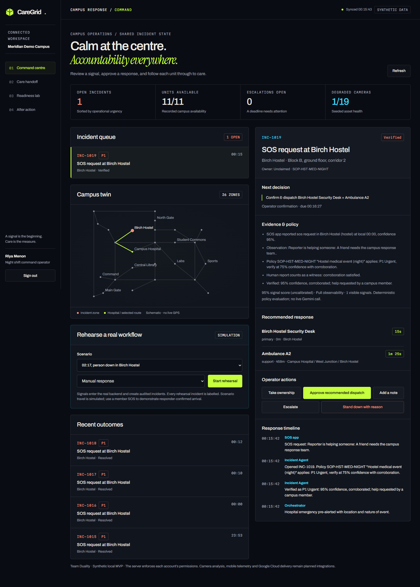
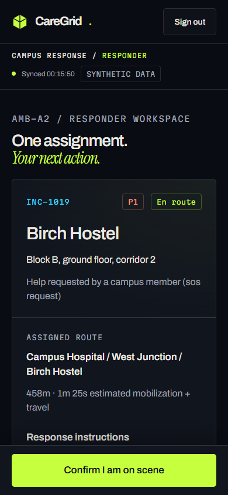
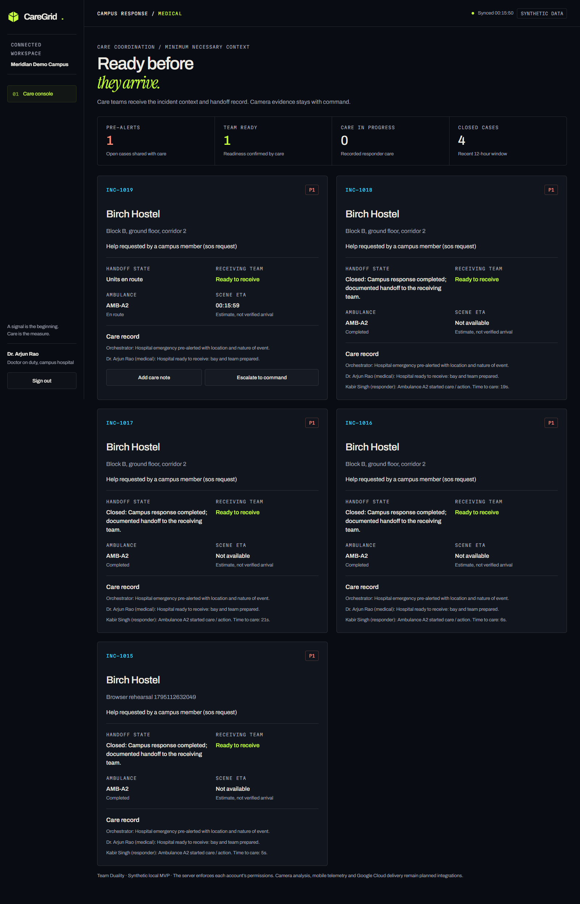
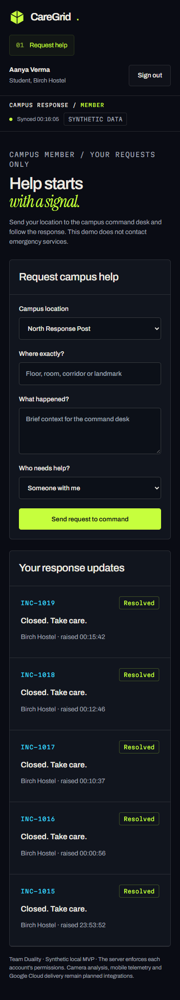
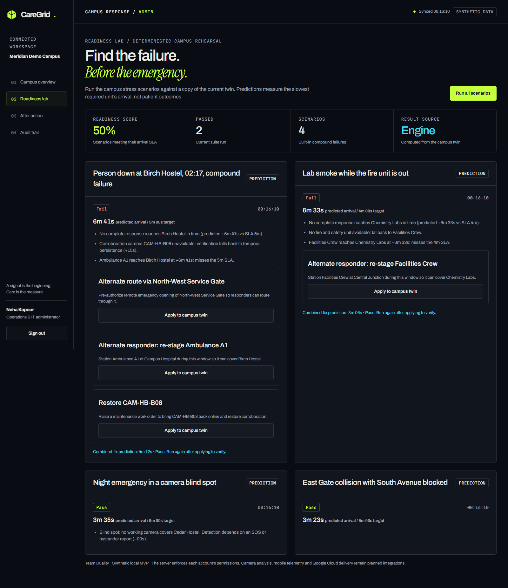
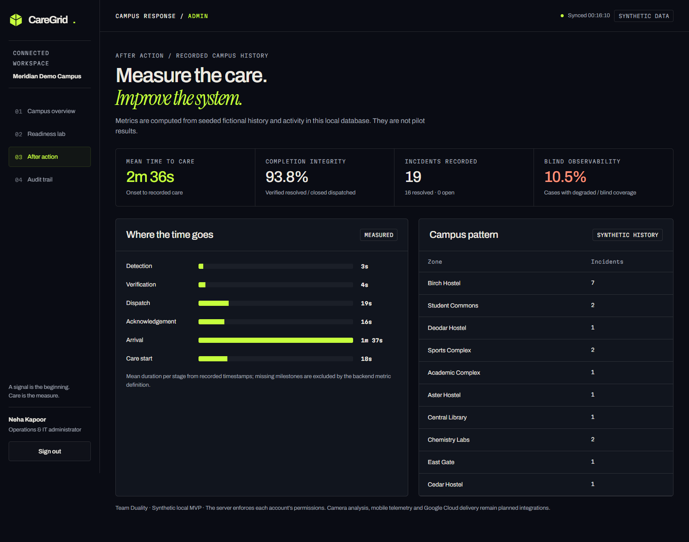
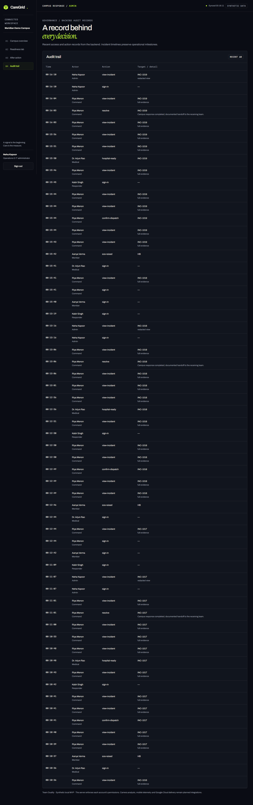
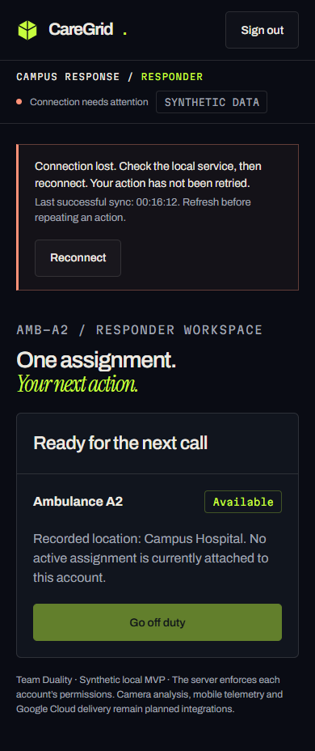

A connected campus.
A response you can follow.
Product captures from CareGrid's local Serverpod/PostgreSQL MVP. Separate authenticated browser sessions exercised the workflow and exported these screens. All campus data is synthetic; Google deployment remains planned.
Captions, scope and reproduction instructions · Original presentation assets and Google architecture


01 / Command centre
Actual backend policy, route recommendation and timeline for a fictional member SOS.
Open PNG

02 / Responder in motion
An independently authenticated crew records its progress. 390px browser viewport; no live GPS.
Open PNG

03 / Ready to receive
Receiving-team readiness is recorded by the medical account and shared with command.
Open PNG

04 / Close the loop
The requesting member sees response updates from the same database.
Open PNG

05 / Rehearse the failure
Engine-computed predictions against a seeded campus twin; no field performance claim.
Open PNG

06 / Measure the response
Recorded timestamps drive metrics. The underlying history and activity are fictional.
Open PNG

07 / A decision record
Who accessed a case, approved a dispatch, prepared care or applied a change.
Open PNG

08 / Failure stays visible
Connection loss is explicit and blocks further actions until reconciliation.
Open PNG